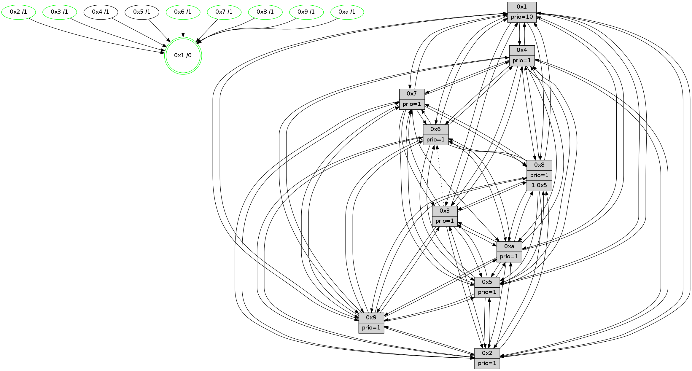

>> << IDX [start] -100 -25 -5 +0 +5 +25 [1580.63119006]
 Previous packets
----------------------------------------------------------------------
1575.114278 beacon01(faad) #0 coord=01,02,03,04,05,06,07,0a,09,08 cycle=688.0ms assoc
-- color-indic=1 64 8a 0a
1575.124260 beacon02(faad) #0 coord=01,02,03,04,05,06,07,0a,09,08 cycle=688.0ms assoc 64 19 3b
1575.134260 beacon03(faad) #0 coord=01,02,03,04,05,06,07,0a,09,08 cycle=688.0ms assoc 64 63 76
1575.144261 beacon04(faad) #0 coord=01,02,03,04,05,06,07,0a,09,08 cycle=688.0ms assoc 64 14 9c
1575.154260 beacon05(faad) #0 coord=01,02,03,04,05,06,07,0a,09,08 cycle=688.0ms assoc 64 6e d1
1575.164260 beacon06(faad) #0 coord=01,02,03,04,05,06,07,0a,09,08 cycle=688.0ms assoc 64 e0 06
1575.174261 beacon07(faad) #0 coord=01,02,03,04,05,06,07,0a,09,08 cycle=688.0ms assoc 64 9a 4b
1575.184266 beacon0a(faad) #0 coord=01,02,03,04,05,06,07,0a,09,08 cycle=688.0ms assoc 64 eb 40
1575.204266 beacon08(faad) #0 coord=01,02,03,04,05,06,07,0a,09,08 cycle=688.0ms assoc 64 1f da
1575.215840 [Hello(1): seq=913 sym=4,2,9,5,10,3,8,6,7 sysInfo=coloring-mode-on,ColoringModeRequestCalled stat=4:8,6,13,5/2:11,2,7,7/9:1,8,9,5/5:5,11,14,12/10:11,0,1,9/3:7,12,0,13/8:4,11,7,8/6:1,7,10,5/7:8,6,0,3]
1575.218450 [Hello(2): seq=1000 sym=4,5,7,6,3,9,8,10,1 sysInfo=hasWarning stat=4:2,7,11,0/5:5,2,14,5/7:6,11,3,4/6:6,8,1,0/3:12,15,4,0/9:13,14,8,12/8:13,10,9,1/10:13,2,8,14/1:9,5,13,0]
1575.224830 [Color(3) seq=633 @0:0 prio=1]
1575.227378 [Hello(6): seq=1004 sym=2,5,4,7,9,8,10,1 sysInfo=hasWarning stat=2:9,13,8,1/5:15,15,2,7/4:15,1,11,11/7:2,12,13,2/9:3,14,0,13/8:4,4,6,11/10:8,0,9,0/1:2,8,2,1]
1575.229904 [Color(8) seq=591 @0:0 prio=1]
1575.234366 [Color(6) seq=636 @0:0 prio=1 >>1.@2,1.@3,1.@4]
----------------------------------------------------------------------
1575.902408 beacon01(faad) #0 coord=01,02,03,04,05,06,07,0a,09,08 cycle=688.0ms assoc
-- color-indic=1 64 36 0f
1575.912390 beacon02(faad) #0 coord=01,02,03,04,05,06,07,0a,09,08 cycle=688.0ms assoc 64 a5 3e
1575.922391 beacon03(faad) #0 coord=01,02,03,04,05,06,07,0a,09,08 cycle=688.0ms assoc 64 df 73
1575.932391 beacon04(faad) #0 coord=01,02,03,04,05,06,07,0a,09,08 cycle=688.0ms assoc 64 a8 99
1575.942391 beacon05(faad) #0 coord=01,02,03,04,05,06,07,0a,09,08 cycle=688.0ms assoc 64 d2 d4
1575.952390 beacon06(faad) #0 coord=01,02,03,04,05,06,07,0a,09,08 cycle=688.0ms assoc 64 5c 03
1575.962392 beacon07(faad) #0 coord=01,02,03,04,05,06,07,0a,09,08 cycle=688.0ms assoc 64 26 4e
1575.972398 beacon0a(faad) #0 coord=01,02,03,04,05,06,07,0a,09,08 cycle=688.0ms assoc 64 57 45
1575.992397 beacon08(faad) #0 coord=01,02,03,04,05,06,07,0a,09,08 cycle=688.0ms assoc 64 a3 df
1576.004529 [Hello(4): seq=1004 sym=5,8,6,2,3,9,7,10,1 sysInfo=hasWarning stat=5:14,14,13,5/8:11,13,3,0/6:4,4,9,4/2:6,9,15,3/3:11,10,7,1/9:5,8,0,5/7:12,4,4,1/10:6,2,8,0/1:14,12,1,1]
1576.007261 [Hello(9): seq=948 sym=2,5,3,4,7,6,8,10,1 sysInfo=hasWarning stat=2:8,5,1,13/5:11,10,8,1/3:7,7,14,7/4:14,0,8,5/7:4,3,1,1/6:6,2,14,3/8:0,15,9,10/10:14,15,11,1/1:6,2,3,1]
1576.010486 [Hello(8): seq=948 sym=5,2,3,7,9,6,4,10,1 sysInfo=hasWarning stat=5:15,2,8,4/2:6,0,4,14/3:7,9,8,6/7:14,7,4,1/9:13,0,10,8/6:3,9,5,3/4:9,11,15,3/10:5,1,0,6/1:3,6,4,0]
1576.013463 [Hello(10): seq=937 sym=6,2,3,8,7,5,9,4,1 sysInfo=hasWarning stat=6:0,2,14,7/2:8,9,1,2/3:14,12,7,15/8:13,10,3,7/7:1,7,15,11/5:14,13,7,4/9:14,5,3,1/4:2,0,11,5/1:10,11,1,1]
1576.016932 [Color(5) seq=529 @0:0 prio=1]
1576.018527 [Color(10) seq=581 @0:0 prio=1]
1576.021659 [Color(7) seq=511 @0:0 prio=1]
1576.023479 [Color(9) seq=530 @0:0 prio=1]
1576.024942 [Color(1) seq=684 @0:0 prio=10]
----------------------------------------------------------------------
1576.690539 beacon01(faad) #0 coord=01,02,03,04,05,06,07,0a,09,08 cycle=688.0ms assoc
-- color-indic=1 64 f2 01
1576.700521 beacon02(faad) #0 coord=01,02,03,04,05,06,07,0a,09,08 cycle=688.0ms assoc 64 61 30
1576.710521 beacon03(faad) #0 coord=01,02,03,04,05,06,07,0a,09,08 cycle=688.0ms assoc 64 1b 7d
1576.720521 beacon04(faad) #0 coord=01,02,03,04,05,06,07,0a,09,08 cycle=688.0ms assoc 64 6c 97
1576.730522 beacon05(faad) #0 coord=01,02,03,04,05,06,07,0a,09,08 cycle=688.0ms assoc 64 16 da
1576.740521 beacon06(faad) #0 coord=01,02,03,04,05,06,07,0a,09,08 cycle=688.0ms assoc 64 98 0d
1576.750521 beacon07(faad) #0 coord=01,02,03,04,05,06,07,0a,09,08 cycle=688.0ms assoc 64 e2 40
1576.760526 beacon0a(faad) #0 coord=01,02,03,04,05,06,07,0a,09,08 cycle=688.0ms assoc 64 93 4b
1576.780527 beacon08(faad) #0 coord=01,02,03,04,05,06,07,0a,09,08 cycle=688.0ms assoc 64 67 d1
1576.792438 [Hello(1): seq=914 sym=4,2,9,5,10,3,8,6,7 sysInfo=coloring-mode-on,ColoringModeRequestCalled stat=4:9,6,13,5/2:12,2,7,7/9:1,8,9,5/5:5,11,14,12/10:11,0,1,9/3:8,13,0,13/8:4,12,7,8/6:2,8,10,5/7:8,6,0,3]
1576.796167 [Hello(5): seq=1005 sym=7,6,4,2,1,9,8,10,3 sysInfo=hasWarning stat=7:13,11,4,2/6:11,14,2,2/4:10,0,7,1/2:8,6,2,0/1:14,6,12,0/9:3,8,15,14/8:0,11,9,9/10:12,7,3,12/3:10,1,3,0]
1576.799449 [Color(8) seq=592 @0:0 prio=1 >1.@5,1.@6,1.@7,1.@9]
1576.801729 [Hello(6): seq=1005 sym=2,5,4,7,9,8,10,1 sysInfo=hasWarning stat=2:10,13,8,1/5:15,0,2,7/4:0,1,11,11/7:3,13,13,2/9:4,15,0,13/8:5,4,6,11/10:8,1,9,0/1:3,9,2,1]
1576.805528 [Hello(2): seq=1001 sym=4,5,7,6,3,9,8,10,1 sysInfo=hasWarning stat=4:3,7,11,0/5:5,3,14,5/7:7,12,3,4/6:7,9,1,0/3:13,0,4,0/9:14,15,8,12/8:14,11,9,1/10:13,3,8,14/1:9,6,13,0]
1576.808437 [Hello(3): seq=1005 sym=1,7,2,4,8,9,10,5 asym=6 sysInfo=hasWarning stat=1:4,7,6,0/7:4,9,3,1/2:12,8,3,0/4:3,10,3,0/8:11,9,11,10/9:13,8,12,3/10:2,0,2,7/5:9,2,8,4/6:0,1,0,0]
1576.813256 [Color(3) seq=634 @0:0 prio=1]
1576.816343 [Color(6) seq=637 @0:0 prio=1]
----------------------------------------------------------------------
1577.478668 beacon01(faad) #0 coord=01,02,03,04,05,06,07,0a,09,08 cycle=688.0ms assoc
-- color-indic=1 64 4e 04
1577.488651 beacon02(faad) #0 coord=01,02,03,04,05,06,07,0a,09,08 cycle=688.0ms assoc 64 dd 35
1577.498650 beacon03(faad) #0 coord=01,02,03,04,05,06,07,0a,09,08 cycle=688.0ms assoc 64 a7 78
1577.508650 beacon04(faad) #0 coord=01,02,03,04,05,06,07,0a,09,08 cycle=688.0ms assoc 64 d0 92
1577.518651 beacon05(faad) #0 coord=01,02,03,04,05,06,07,0a,09,08 cycle=688.0ms assoc 64 aa df
1577.528651 beacon06(faad) #0 coord=01,02,03,04,05,06,07,0a,09,08 cycle=688.0ms assoc 64 24 08
1577.538652 beacon07(faad) #0 coord=01,02,03,04,05,06,07,0a,09,08 cycle=688.0ms assoc 64 5e 45
1577.548656 beacon0a(faad) #0 coord=01,02,03,04,05,06,07,0a,09,08 cycle=688.0ms assoc 64 2f 4e
1577.568659 beacon08(faad) #0 coord=01,02,03,04,05,06,07,0a,09,08 cycle=688.0ms assoc 64 db d4
1577.580833 [Hello(8): seq=949 sym=5,2,3,7,9,6,4,10,1 sysInfo=hasWarning stat=5:15,3,8,4/2:7,0,4,14/3:8,10,8,6/7:15,8,4,1/9:13,1,10,8/6:4,10,5,3/4:9,11,15,3/10:5,2,0,6/1:4,7,4,0]
1577.583875 [Color(5) seq=530 @0:0 prio=1]
1577.585816 [Hello(7): seq=1005 sym=2,3,5,6,8,4,9,10,1 sysInfo=hasWarning stat=2:15,3,13,6/3:0,9,1,6/5:1,13,14,6/6:10,9,13,15/8:8,2,5,2/4:11,14,4,2/9:2,9,7,4/10:1,3,0,0/1:15,4,14,0]
1577.588660 [Hello(10): seq=938 sym=6,2,3,8,7,5,9,4,1 sysInfo=hasWarning stat=6:1,3,14,7/2:9,9,1,2/3:15,13,7,15/8:13,11,3,7/7:1,8,15,11/5:15,13,7,4/9:14,6,3,1/4:3,0,11,5/1:11,12,1,1]
1577.591318 [Hello(9): seq=949 sym=2,5,3,4,7,6,8,10,1 sysInfo=hasWarning stat=2:9,5,1,13/5:12,10,8,1/3:8,8,14,7/4:15,0,8,5/7:4,3,1,1/6:7,3,14,3/8:0,0,9,10/10:14,15,11,1/1:7,3,3,1]
1577.596395 [Color(9) seq=531 @0:0 prio=1]
1577.597918 [STC(1) #0.285 tree-change,inconsistent-stability,stable,to-color d=0]
1577.599629 [Hello(4): seq=1005 sym=5,8,6,2,3,9,7,10,1 sysInfo=hasWarning stat=5:15,15,13,5/8:12,14,3,0/6:5,5,9,4/2:7,9,15,3/3:12,11,7,1/9:6,9,0,5/7:12,5,4,1/10:7,3,8,0/1:15,13,1,1]
1577.602227 [Color(1) seq=685 @0:0 prio=10]
----------------------------------------------------------------------
1578.266797 beacon01(faad) #0 coord=01,02,03,04,05,06,07,0a,09,08 cycle=688.0ms assoc
-- color-indic=1 64 7a 1c
1578.276779 beacon02(faad) #0 coord=01,02,03,04,05,06,07,0a,09,08 cycle=688.0ms assoc 64 e9 2d
1578.286779 beacon03(faad) #0 coord=01,02,03,04,05,06,07,0a,09,08 cycle=688.0ms assoc 64 93 60
1578.296781 beacon04(faad) #0 coord=01,02,03,04,05,06,07,0a,09,08 cycle=688.0ms assoc 64 e4 8a
1578.306781 beacon05(faad) #0 coord=01,02,03,04,05,06,07,0a,09,08 cycle=688.0ms assoc 64 9e c7
1578.316783 beacon06(faad) #0 coord=01,02,03,04,05,06,07,0a,09,08 cycle=688.0ms assoc 64 10 10
1578.326780 beacon07(faad) #0 coord=01,02,03,04,05,06,07,0a,09,08 cycle=688.0ms assoc 64 6a 5d
1578.336785 beacon0a(faad) #0 coord=01,02,03,04,05,06,07,0a,09,08 cycle=688.0ms assoc 64 1b 56
1578.356788 beacon08(faad) #0 coord=01,02,03,04,05,06,07,0a,09,08 cycle=688.0ms assoc 64 ef cc
1578.368071 [STC(10)->1 #0.285 tree-change,inconsistent-stability,stable,to-color d=1]
1578.369521 [Hello(2): seq=1002 sym=4,5,7,6,3,9,8,10,1 sysInfo=hasWarning stat=4:4,7,11,0/5:5,4,14,5/7:8,13,3,4/6:7,10,1,0/3:14,1,4,0/9:15,0,8,12/8:15,11,9,1/10:14,3,8,14/1:9,7,14,0]
1578.372195 [STC(7)->1 #0.285 tree-change,inconsistent-stability,stable,to-color d=1]
1578.373501 [Hello(5): seq=1006 sym=7,6,4,2,1,9,8,10,3 sysInfo=hasWarning stat=7:14,11,4,2/6:12,15,2,2/4:11,0,7,1/2:9,6,2,0/1:14,7,13,0/9:4,9,15,14/8:1,12,9,9/10:13,8,3,12/3:11,2,3,0]
1578.376484 [STC(8)->1 #0.285 tree-change,inconsistent-stability,stable,to-color d=1]
1578.377768 [Hello(3): seq=1006 sym=1,7,2,4,8,9,10,5 asym=6 sysInfo=hasWarning stat=1:5,8,7,0/7:5,9,3,1/2:12,8,3,0/4:4,10,3,0/8:12,9,11,10/9:14,9,12,3/10:3,1,2,7/5:9,3,8,4/6:0,2,0,0]
1578.380636 [STC(9)->1 #0.285 tree-change,inconsistent-stability,stable,to-color d=1]
1578.382021 [Hello(1): seq=915 sym=4,2,9,5,10,3,8,6,7 sysInfo=coloring-mode-on,ColoringModeRequestCalled stat=4:9,6,13,5/2:13,2,7,7/9:1,8,9,5/5:6,11,14,12/10:11,0,1,9/3:9,14,0,13/8:5,13,7,8/6:3,9,10,5/7:8,6,0,3]
1578.386061 [STC(3)->1 #0.285 tree-change,inconsistent-stability,stable,to-color d=1]
1578.387768 [STC(2)->1 #0.285 tree-change,inconsistent-stability,stable,to-color d=1]
1578.390652 [Hello(6): seq=1006 sym=2,5,4,7,9,8,10,1 sysInfo=hasWarning stat=2:10,13,8,1/5:15,1,2,7/4:1,1,11,11/7:4,14,13,2/9:5,0,0,13/8:6,4,6,11/10:9,1,9,0/1:4,10,3,1]
1578.393668 [STC(6)->1 #0.285 tree-change,inconsistent-stability,stable,to-color d=1]
1578.396113 [Color(8) seq=593 @0:0 prio=1 >1.@5,1.@6,1.@7,1.@9]
1578.400543 [TreeStatus(6)-.->1 #0.285 tree-change,inconsistent-stability,stable child=1]
1578.403004 [Color(6) seq=638 @0:0 prio=1]
1578.408359 [TreeStatus(2)-.->1 #0.285 tree-change,inconsistent-stability,stable child=1]
1578.412541 [Color(3) seq=635 @0:0 prio=1]
----------------------------------------------------------------------
1579.054929 beacon01(faad) #0 coord=01,02,03,04,05,06,07,0a,09,08 cycle=688.0ms assoc
-- color-indic=1 64 c6 19
1579.064912 beacon02(faad) #0 coord=01,02,03,04,05,06,07,0a,09,08 cycle=688.0ms assoc 64 55 28
1579.074911 beacon03(faad) #0 coord=01,02,03,04,05,06,07,0a,09,08 cycle=688.0ms assoc 64 2f 65
1579.084912 beacon04(faad) #0 coord=01,02,03,04,05,06,07,0a,09,08 cycle=688.0ms assoc 64 58 8f
1579.094911 beacon05(faad) #0 coord=01,02,03,04,05,06,07,0a,09,08 cycle=688.0ms assoc 64 22 c2
1579.104913 beacon06(faad) #0 coord=01,02,03,04,05,06,07,0a,09,08 cycle=688.0ms assoc 64 ac 15
1579.114913 beacon07(faad) #0 coord=01,02,03,04,05,06,07,0a,09,08 cycle=688.0ms assoc 64 d6 58
1579.124917 beacon0a(faad) #0 coord=01,02,03,04,05,06,07,0a,09,08 cycle=688.0ms assoc 64 a7 53
1579.144918 beacon08(faad) #0 coord=01,02,03,04,05,06,07,0a,09,08 cycle=688.0ms assoc 64 53 c9
1579.156789 [Hello(8): seq=950 sym=5,2,3,7,9,6,4,10,1 sysInfo=hasWarning stat=5:15,4,9,4/2:8,0,4,15/3:8,11,8,6/7:0,8,4,1/9:14,2,10,8/6:4,11,5,4/4:10,11,15,3/10:6,3,1,6/1:4,8,5,0]
1579.159747 [Color(1) seq=686 @0:0 prio=10]
1579.161114 [Color(5) seq=531 @0:0 prio=1]
1579.162837 [Hello(9): seq=950 sym=2,5,3,4,7,6,8,10,1 sysInfo=hasWarning stat=2:9,5,2,14/5:12,10,8,1/3:8,9,15,7/4:0,0,8,5/7:4,3,1,1/6:8,4,15,4/8:1,1,9,10/10:14,15,11,1/1:8,4,4,1]
1579.165630 [Hello(4): seq=1006 sym=5,8,6,2,3,9,7,10,1 sysInfo=hasWarning stat=5:0,15,14,5/8:12,15,4,0/6:6,6,10,5/2:8,9,0,4/3:12,12,8,1/9:6,9,1,5/7:12,5,5,1/10:7,3,9,0/1:0,14,1,1]
1579.170058 [Hello(7): seq=1006 sym=2,3,5,6,8,4,9,10,1 sysInfo=hasWarning stat=2:15,3,14,7/3:1,10,2,6/5:2,13,14,6/6:11,10,14,0/8:9,3,6,2/4:12,14,4,2/9:2,10,8,4/10:1,3,0,0/1:0,5,15,0]
1579.172657 [Hello(10): seq=939 sym=6,2,3,8,5,9,4,1 sysInfo=hasWarning stat=6:2,4,15,8/2:10,9,2,3/3:0,14,8,15/8:14,12,4,7/5:0,13,7,4/9:14,7,4,1/4:4,0,11,5/1:12,13,2,1]
1579.176368 [Color(7) seq=513 @0:0 prio=1]
1579.178080 [Color(9) seq=532 @0:0 prio=1]
1579.181576 [Color(10) seq=583 @0:0 prio=1]
----------------------------------------------------------------------
1579.843058 beacon01(faad) #0 coord=01,02,03,04,05,06,07,0a,09,08 cycle=688.0ms assoc
-- color-indic=1 64 02 17
1579.853041 beacon02(faad) #0 coord=01,02,03,04,05,06,07,0a,09,08 cycle=688.0ms assoc 64 91 26
1579.863040 beacon03(faad) #0 coord=01,02,03,04,05,06,07,0a,09,08 cycle=688.0ms assoc 64 eb 6b
1579.873041 beacon04(faad) #0 coord=01,02,03,04,05,06,07,0a,09,08 cycle=688.0ms assoc 64 9c 81
1579.883044 beacon05(faad) #0 coord=01,02,03,04,05,06,07,0a,09,08 cycle=688.0ms assoc 64 e6 cc
1579.893040 beacon06(faad) #0 coord=01,02,03,04,05,06,07,0a,09,08 cycle=688.0ms assoc 64 68 1b
1579.903042 beacon07(faad) #0 coord=01,02,03,04,05,06,07,0a,09,08 cycle=688.0ms assoc 64 12 56
1579.913046 beacon0a(faad) #0 coord=01,02,03,04,05,06,07,0a,09,08 cycle=688.0ms assoc 64 63 5d
1579.933045 beacon08(faad) #0 coord=01,02,03,04,05,06,07,0a,09,08 cycle=688.0ms assoc 64 97 c7
1579.943990 [Hello(1): seq=916 sym=4,2,9,5,10,3,8,6,7 sysInfo=coloring-mode-on,ColoringModeRequestCalled stat=4:10,6,13,5/2:13,2,8,8/9:2,9,9,5/5:6,12,14,12/10:12,1,1,9/3:9,15,1,13/8:6,14,7,8/6:4,10,11,6/7:9,7,0,3]
1579.946949 [Hello(5): seq=1007 sym=7,6,4,2,1,9,8,10,3 sysInfo=hasWarning stat=7:15,12,4,2/6:13,0,3,3/4:12,0,7,1/2:9,6,3,1/1:15,7,13,0/9:5,10,0,14/8:2,13,9,9/10:14,9,3,12/3:11,3,4,0]
1579.949683 [Hello(2): seq=1003 sym=4,5,7,6,3,9,8,10,1 sysInfo=hasWarning stat=4:5,7,11,0/5:5,5,14,5/7:9,14,3,4/6:7,10,1,0/3:14,2,4,0/9:0,1,8,12/8:0,11,9,1/10:15,4,9,14/1:9,8,14,0]
1579.956638 [Color(6) seq=639 @0:0 prio=1]
1579.958250 [Hello(3): seq=1007 sym=1,7,2,4,8,9,10,5 asym=6 sysInfo=hasWarning stat=1:5,9,7,0/7:6,10,4,1/2:13,8,3,0/4:5,10,3,0/8:13,9,11,10/9:15,10,12,3/10:4,2,3,7/5:9,4,8,4/6:0,2,0,0]
1579.962106 [Color(3) seq=636 @0:0 prio=1]
1579.963992 [Color(2) seq=567 @0:0 prio=1]